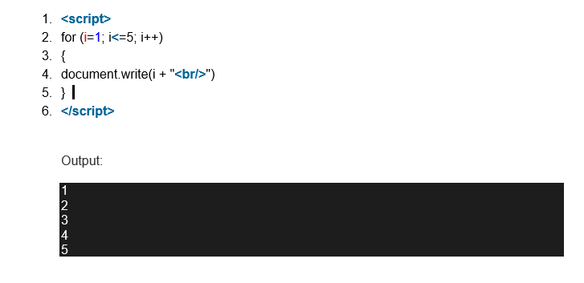
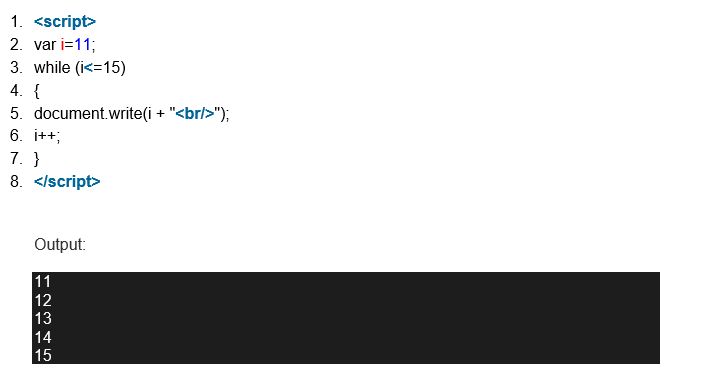
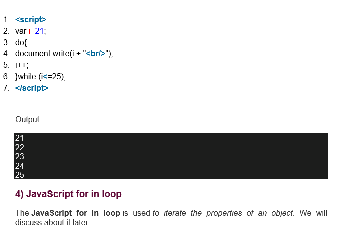

Java Script Loops
The JavaScript loops are used to iterate the piece of code using for, while, do while or for-in loops. It makes the code compact. It is mostly used in array.
There are four types of loops in JavaScript.
1. for loop
2. while loop
3. do-while loop
4. for-in loop
JavaScript For loop
The JavaScript for loop iterates the elements for the fixed number of times. It should be used if number of iteration is known. The syntax of for loop is given below.
1. for (initialization; condition; increment)
2. {
3. code to be executed
4. }
Let’s see the simple example of for loop in javascript.

JavaScript while loop
The JavaScript while loop iterates the elements for the infinite number of times. It should be used if number of iteration is not known. The syntax of while loop is given below.
1. while (condition)
2. {
3. code to be executed
4. }
Let’s see the simple example of while loop in javascript.

JavaScript do while loop
The JavaScript do while loop iterates the elements for the infinite number of times like while loop. But, code is executed at least once whether condition is true or false.
The syntax of do while loop is given below.
1. do{
2. code to be executed
3. }while (condition);
Let’s see the simple example of do while loop in javascript.

JavaScript for in loop
The JavaScript for in loop is used to iterate the properties of an object.